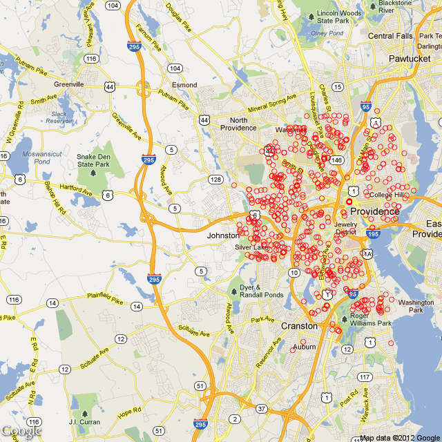

2012-01-23
The past few months I've been learning how to use R. This morning, I decided to try out two first-- importing a table of data that is being read of the web and overlaying location data onto a map.
With a little bit of Google skills and just enough R know-how I was able to produce this image:

There were a few things that were kind of tricky for me. First, for sometime I couldn't get latitude and longitude components for the addresses. I figured there was something wrong with the way I was using the *apply class of functions in R. apply() (and the related class of functions lapply, sapply, etc.) are really handy if a bit tricky for beginning R users. This function permits quickly "applying" a function across multiple elements. Traditionally this is done with a loop, but the apply() functions "vectorize" this process (R folks always talk about making your code more vectorized which has something to do with the structure of objects in R but is beyond my computer science skills-- essentially, vectorized code runs much faster and more efficiency than loops because of some underlying feature of the language). After playing around with apply, lapply, and sapply, I decided to move back into my "old" way of thinking and just write a loop:
latlongroll <- function(address){
lat <- vector(mode = "numeric", length = length(address))
lng <- vector(mode = "numeric", length = length(address))
for(i in 1:length(address)){
latlong <- gGeoCode(address[i])
lat[i]<-latlong[1]
lng[i]<-latlong[2]
}
return(cbind(lat,lng))
}
This still didn't work-- I kept on getting a strange out-of-bounds call. So I decided to go down the rabbit hole of regular expressions and try and see if I could clean up my addresses any further (I couldn't). So, now seemed as good a time as any to figure out how to print to the console while a loop is running to keep track of progress and where exactly my function was stopped. This turned out to be a bit tricky because I didn't know you had to include a tricky line, r flush.console() in order to get the prints to work. When I figured this out I found out my loop was being caught on my 7th element, a perfectly well formed address. When I ran gGeoCode() on that address only it worked fine. So I thought, maybe Google is bouncing me out because I'm hitting it too fast? And bingo, the final (working version):
latlongroll <- function(address){
lat <- vector(mode = "numeric", length = length(address))
lng <- vector(mode = "numeric", length = length(address))
for(i in 1:length(address)){
print(i)
flush.console()
latlong <- gGeoCode(address[i])
lat[i]<-latlong[1]
lng[i]<-latlong[2]
Sys.sleep(0.5)
}
return(cbind(lat,lng))
}
Other than that, the whole process was pretty straight forward. I have to thank Tony Breyal for posting the functions I used to get latitude and longitude on Stack Overflow. Also, I found the RgoogleMaps vignette to be very helpful, although I wish it had slightly better explained what was going on in qbbox().
Finally, my full source for the above:
# Providence Real Estate Transactions over the last 40 days.
# Required Packages
require('XML')
require('RCurl')
require('RJSONIO')
require("RgoogleMaps")
# Functions
# Construct URL required to get the Lat and Long from Google Maps
construct.geocode.url <- function(address, return.call = "json", sensor = "false" ) {
root <- "http://maps.google.com/maps/api/geocode/"
u <- paste(root, return.call, "?address=", address, "&sensor=", sensor, sep = "" )
return(URLencode(u))
}
# Now that we have the proper Google Maps address, get the resulting latitude and longitude
gGeoCode <- function(address) {
u <- construct.geocode.url(address)
doc <- getURL(u)
x <- fromJSON(doc,simplify = FALSE)
lat <- x$results[[1]]$geometry$location$lat
lng <- x$results[[1]]$geometry$location$lng
return(c(lat, lng))
}
# Roll through addresses to create lat long
latlongroll <- function(address){
# Initializing the length of a vector dramatically speeds up the code. Far
# better than reassigning and resizing each time in the loop.
lat <- vector(mode = "numeric", length = length(address))
lng <- vector(mode = "numeric", length = length(address))
for(i in 1:length(address)){
# I kept the print in because this function takes a long time to run so I
# like to watch its progress.
print(i)
flush.console()
# To reduce the calls, I chose to store lat and long locally before
# separating the two whereas initially I hit Google for each separately
latlong <- gGeoCode(address[i])
lat[i]<-latlong[1]
lng[i]<-latlong[2]
# I'll have to experiment with the sleep time. I'm certain 0.5 seconds is
# too long (and this is the bulk of the time spent on the whole code).
Sys.sleep(0.5)
}
return(cbind(lat,lng))
}
# Open to the most recent real estate transactions for Providence on the
# Projo
site <- 'http://www.providencejournal.com/homes/real-estate-transactions/assets/pages/real-estate-transactions-providence.htm'
# Read in the table with the header as variable names.
realestate.table<-readHTMLTable(site,header=T,which=1,stringsAsFactors=F)
# Remove the $ sign before the price
realestate.table$Price <- gsub("([$]{1})([0-9]+)", "\\2",
realestate.table$Price)
# Cast price character as numeric
realestate.table$Price<-as.numeric(realestate.table$Price)
# Cast date string as date type (lowercase %y means 2-digit year,
# uppercase is 4 digit)
realestate.table$Date <- as.Date(realestate.table$Date,format='%m/%d/%y')
# Dummy transactions or title changes have a price of $1, removing those
# from data set
providence <- subset(realestate.table,Price>1)
# Removing properties that do not have an address that start with a street
# number
providence <- subset(providence, grepl("^[0-9]+", providence$Address))
# Add lat and lng coordinates to each address
providence<-cbind(providence, latlongroll(providence[,3]))
# Calculate boundary lat and long for map
bb <- qbbox(providence$lat, providence$lng)
# Gets a map from Google Maps
map <- GetMap.bbox(bb$lonR, bb$latR, zoom=12, maptype="mobile")
# plot the points
PlotOnStaticMap(map,lon=providence$lng,lat=providence$lat)